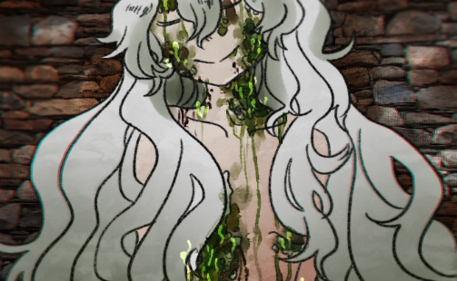
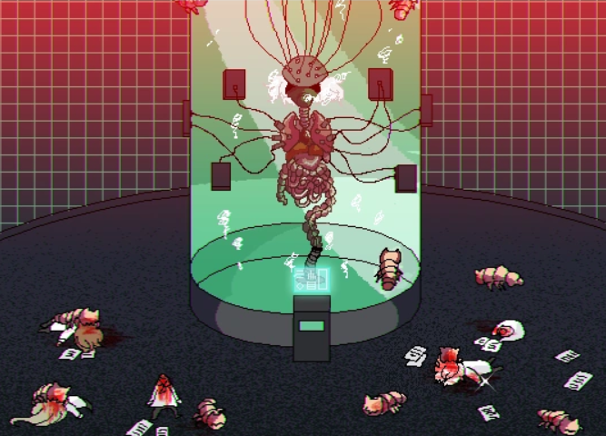
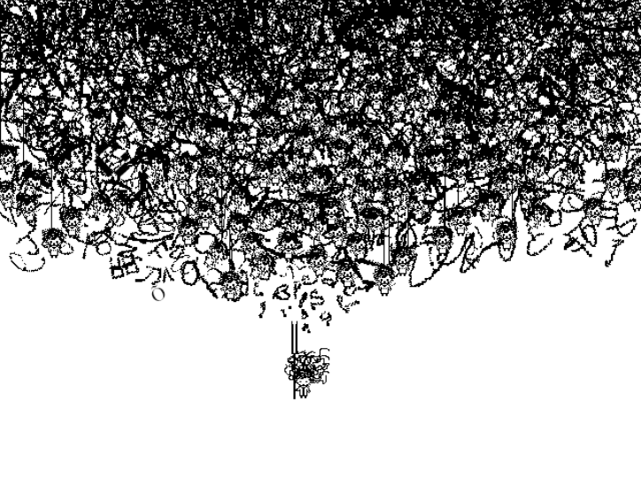

Hello Charlotte — «Привет, Шарлотта» (Hello Charlotte) — это серия инди-игр в жанре приключенческого психологического триллера и RPG, созданная разработчицей Etherane на движке RPG Maker. Сюжет рассказывает о жизни девочки Шарлотты в необычном «Доме», исследуя темы бога, марионеток, реальности и сюрреализма.
Шарлотта Вайлтшайр — главная героиня. Это «Марионетка» (персонаж), через которую игрок («Кукловод») взаимодействует с сюрреалистичным миром игры, исследуя темы жизни, смерти и одиночества. Шарлотта известна своей странной манерой общения, созданием пищевых монстров и способностью менять наряды.
Шарлотта Вайлтшайр
Шарлотта - очень тихая, добрая и любопытная девочка. На протяжении всей второй игры игрок узнает, что ее болезнь становится все хуже. Однако она часто преуменьшает свои симптомы и молчит, так как не хочет обременять других или заставлять их беспокоиться о ней.
Шарлотта очень дружит с теми, кто живет в ее доме, глубоко заботится о них и поддерживает хорошие отношения даже с членами команды Хаксли. Мы также видим, как она приобретает больше друзей во второй игре.
Ей нравится писать, читать и учиться. У нее дома целая коллекция книг, и она написала несколько собственных. Шарлотта пытается рационализировать окружающий мир, чтобы справиться с тем, чего она не знает, и помочь ей лучше понять окружающий мир.
Шарлотта проявляет большой интерес к науке, как к фантастической, так и к настоящей, поскольку у нее есть несколько книг, связанных с наукой, и она хочет заполучить Научно-фантастический альманах, когда сталкивается с ним.
Шарлотта Вайлтшайр(Эдем)
Во время своего пребывания на 9-м этаже в Hello Charlotte EP 3 Беннетт обнаруживает, что рай, известный как Эдем, оказался бывшей Шарлоттой. Ничего не известно о ее личной жизни до того, как она загадала желание.
Шарлотта, жившая на этом этаже, явно желала предоставить убежище для людей, поскольку это общество было на грани краха; в результате она выросла до титанического размера и скончалась спустя некоторое время, но тем самым создала место, куда все могли бы переселиться для безопасности и начать заново.
Исходя из ограниченной информации, можно с уверенностью заключить, что эта Шарлотта обладала избытком доброты, возможно, превосходящим любую другую. В остальном ее личность и черты характера — вопрос открытый.

Оракул/Шарлотта Вайлтшайр (O91)
бывшая личность бога ТВ-мира; ее нашли в стазис-лаборатории шестого этажа в Hello Charlotte EP 3. О том, каким человеком она была до того, как стала Оракулом, ничего не известно/
Флоренс и Скарлетт Эйлер обнаружили сосуд О91 на 6-м этаже лаборатории. Узнав, что она является своего рода «Оракулом» и результатом исследования проекта «Оракул», они обнаружили, что она все еще жива и была удерживаема против ее воли, чтобы сохранить ТВ-мир.
Почти под конец игры Человек-зонтик раскрывает, что причина, по которой данные души Скарлетт Эйлер все еще существуют, в O91, заявляя, что она хотела сохранить данные своей души, несмотря ни на что.

Шарлотта Уилтшир
Хотя её зовут также, как и главную героиню предыдущих эпизодов, Q84 — совершенно отдельный человек. Она постоянно идёт против «сюжета», которому должна следовать, мучая других и сея хаос.
Q84 невероятно язвительна, груба и жестока, она устраивает публичные казни ради развлечения в рамках мероприятий Белого общества под названием «Час казни» и даже убивает Скарлетт Эйлер, используя силу Оракула внутри себя.
Несмотря на свой грубый и вспыльчивый характер, Q84, как можно заметить, сильно привязана к Чарльзу Эйлеру, которого она даже однажды называет «отцом», и успокаивает его, когда дом в итоге разрушается. Хотя чаще всего её поведение с ним остаётся резким и колким, подразумевается, что Чарльз является её единственным другом.
Шарлотта Вильтшир(Чисто-Белая)
Шарлотта Вильтшир (Чисто-Белая) — личность Шарлотты четвертого этажа из третьего эпизода Hello Charlotte. О ее прошлом известно очень мало.
Житель деревни рассказывает Скарлетт, что «Чисто-Белая» пришла и объединила жителей, что было их и её желанием.
Феликс объясняет ей, что Великое Скопление — это Шарлотта четвёртого этажа, поглотившая всех жителей деревни в единое целое, с Шарлоттой в центре всего этого, выступающей в качестве Ядра Великого Скопления.

Шарлотта Вильтшир(V19)
Шарлотта Вильтшир (V19) — антагонист второй половины игры Hello Charlotte 3: Childhood’s End.
Во время первого появления V19, она убивает каждого на втором этаже, за исключением Скарлетт Эйлер, заставляя ту играть в прятки и предлагая «встретиться у Матери».
Позже, когда Скарлетт попадает на одиннадцатый этаж и встречает V19, она рассказывает настоящую природу Дома и Шарлотт, заставляя девушку напасть на неё и задушить. V19 говорит все ещё о Доме, Матери и Шарлоттах даже перед своей смертью.